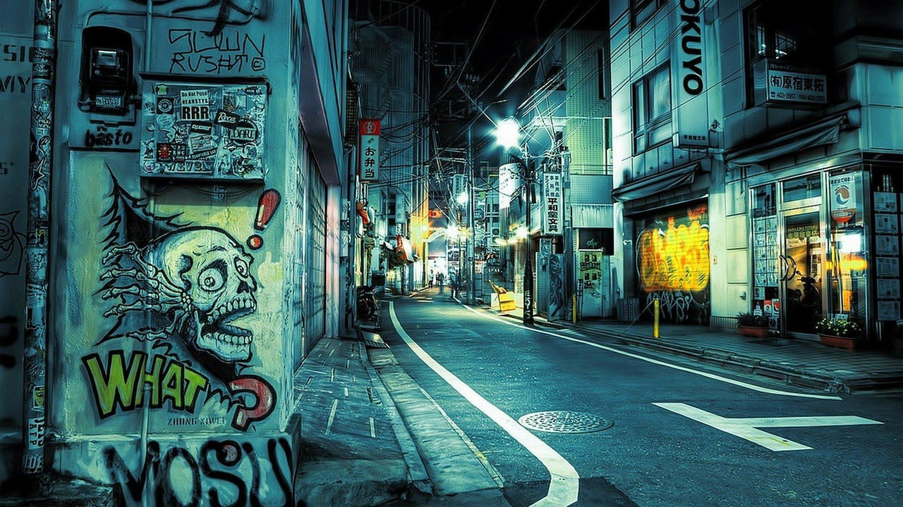

Street Art
Street art is visual art created in public locations for public visibility. It has been associated with the terms "independent art", "post-graffiti", "neo-graffiti" and guerrilla art. Street art has evolved from the early forms of defiant graffiti into a more commercial form of art, as one of the main differences now lies with the messaging. Street art is often meant to provoke thought rather than rejection among the general audience through making its purpose more evident than that of graffiti. The issue of permission has also come at the heart of street art, as graffiti is usually done illegally, whereas street art can nowadays be the product of an agreement or even sometimes a commission. However, it remains different from traditional art exposed in public spaces by its explicit use of said space in the conception phase.